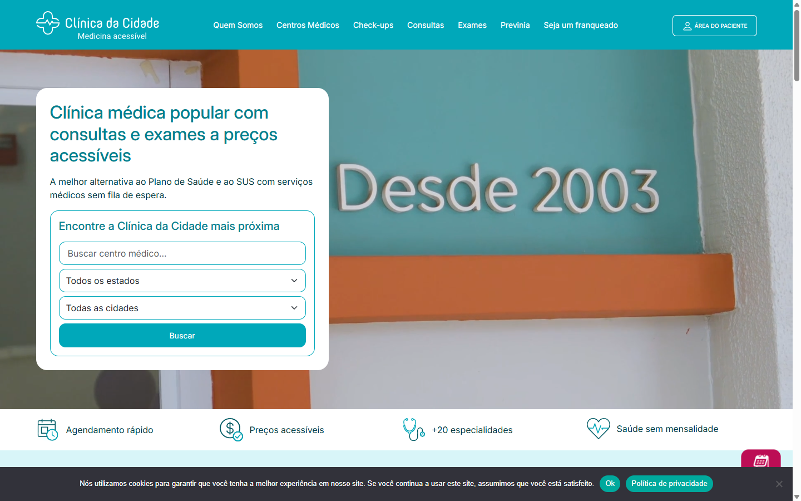
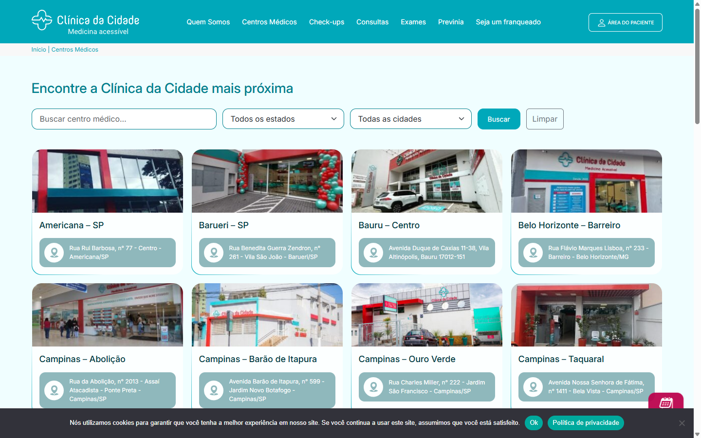
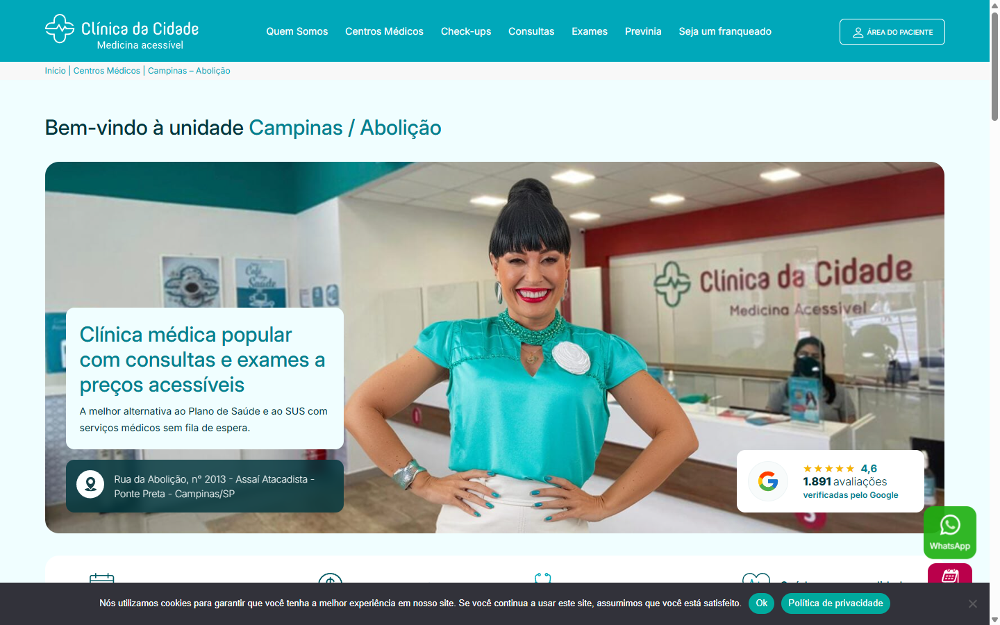
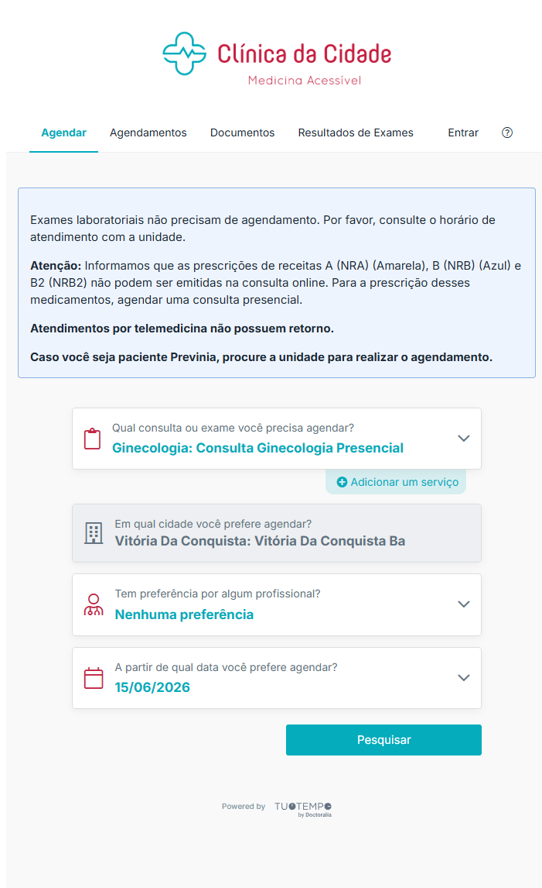
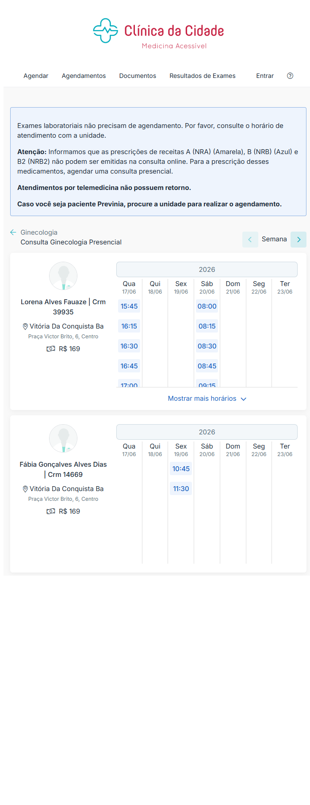
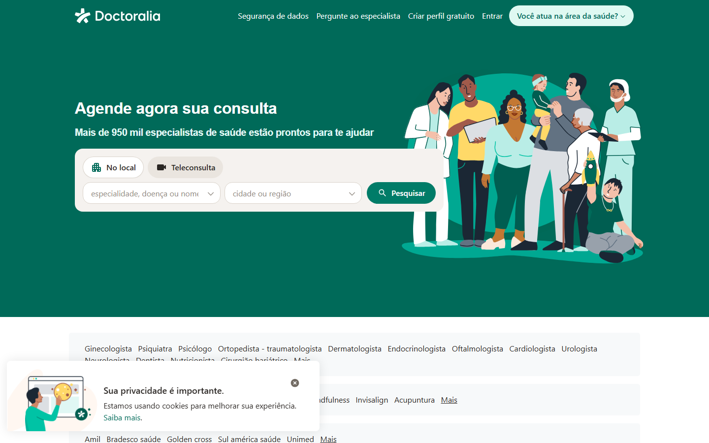
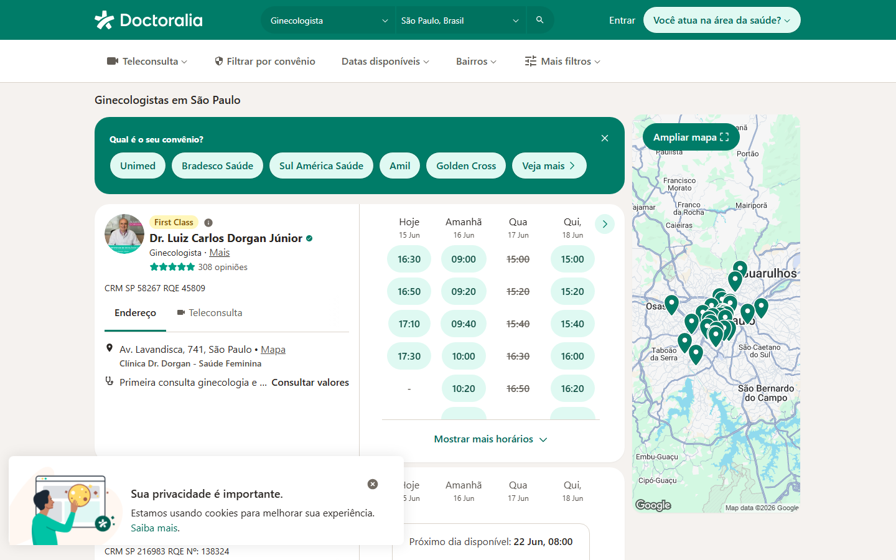
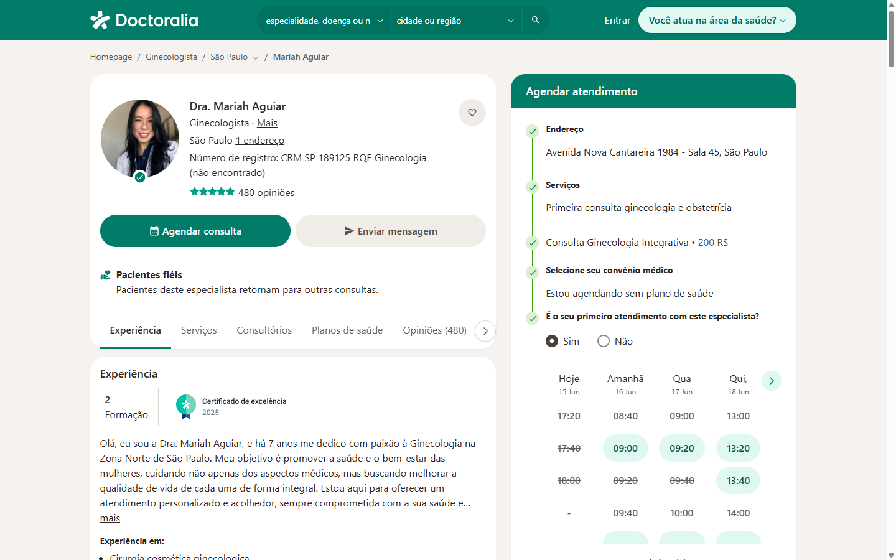

Uma análise visual da jornada de conversão da Clínica da Cidade
comparada com o principal benchmark do setor, a Doctoralia.
A Clínica também tem agendamento online — e mesmo assim ele converte menos. Vamos ver por quê.
Clínica da Cidade · o cliente Doctoralia · o concorrente
Todas as telas deste documento são capturas reais dos sites em produção.
Quem analisamos
Os líderes do Brasil em consulta médica
Estudamos as maiores plataformas de agendamento de consultas do país. Apesar das diferenças,
todas seguem a mesma estratégia central de CRO/conversão:
navegação por serviço, profissionais visíveis e agendamento na própria plataforma.
Nesta apresentação usamos a Doctoralia como exemplo por ser a referência líder.
1º
Doctoralia.com.brExemplo usado nesta análise
~3 miacessos/mês (est.)
2º
boaconsulta.com.brMarketplace de consultas e exames
~2 miacessos/mês (est.)
3º
drconsulta.comRede de centros médicos + agendamento
~2 miacessos/mês (est.)
4º
conexasaude.com.brTelemedicina e agendamento online
~680 milacessos/mês (est.)
A diferença que muda tudo
Não é “ter” agendamento — é como ele é
Clínica da Cidade — navega por UNIDADE
O site organiza tudo por localização física e empurra o paciente para o
WhatsApp. Existe sim um agendamento online, mas ele fica
escondido, exige vários passos e mostra o profissional sem foto,
sem avaliações e sem descrição.
Doctoralia — navega por SERVIÇO
O site organiza tudo por necessidade do paciente (especialidade, sintoma, nome).
Em seguida já mostra profissionais reais com foto, avaliações, preço e agenda —
e o agendamento acontece ali mesmo, em poucos cliques.
As duas usam a mesma tecnologia de agenda (TuoTempo / Doctoralia). A diferença está na
experiência: menos cliques, mais informação e mais confiança convertem mais.
Jornada do usuário · do acesso ao agendamento
Quantos passos até marcar uma consulta?
Clínica da Cidade · agendamento online
1Entra no site
↓
2Encontra o agendamento pouco visível
↓
3Escolhe o serviço / especialidade
↓
4Informa a cidade e a datavários campos
↓
5Clica em Pesquisar
↓
6Vê o profissional sem foto / sem avaliação
↓
7Escolhe horário e faz cadastro
Doctoralia
1Entra no site
↓
2Busca pelo serviço / especialidade
↓
3Vê profissionais com foto, nota e preço
↓
4Escolhe o horário na agenda exibida self-service
↓
5Confirma a consulta na própria plataforma24/7
7
passos + formulário com vários campos
5
passos · profissional visível já no 3º
0
fotos e avaliações no resultado da Clínica
Clínica da Cidade · Home
A primeira pergunta é “onde”, não “o quê”
Cliente

Tela inicial real de clinicadacidade.com.br
O bloco principal é “Encontre a Clínica da Cidade mais próxima” — busca por estado e cidade.
O menu é orientado a instituição: Quem Somos, Centros Médicos, Check-ups, Exames…
Nenhum profissional, preço de consulta ou horário aparece nesta etapa.
O usuário precisa saber qual unidade quer antes de qualquer coisa — uma decisão que ele raramente tem no início.
Clínica da Cidade · Centros Médicos
A navegação principal é um catálogo de endereços
Cliente

Página Centros Médicos — unidades listadas por cidade/endereço
A oferta é apresentada como fachadas e endereços, não como soluções de saúde.
Para o paciente, a pergunta real (“qual médico resolve meu problema?”) continua sem resposta.
É uma estrutura de franquia / institucional, não de marketplace de agendamento.
Clínica da Cidade · Página da Unidade
Na unidade, o caminho em destaque é o WhatsApp
Cliente

Unidade Campinas / Abolição — repare no botão verde de WhatsApp flutuante
A página é institucional: foto da recepção, galeria, vídeo e “como chegar”.
Os serviços são genéricos (“Consultas Médicas”, “Exames”) — sem profissionais, sem preços, sem agenda.
A principal ação de conversão é o WhatsApp: a decisão sai do site e vira uma conversa humana.
O atendente é quem, manualmente, descobre a especialidade e o profissional certo para o paciente.
Clínica da Cidade · Agendamento online
Existe agendamento online — porém cheio de etapas
Cliente

Fluxo real de agendamento online (página interna, link com unidade)
Antes de ver qualquer médico, é preciso preencher serviço, cidade, profissional e data.
A escolha começa por “qual consulta/exame” — e não pelo profissional.
A tela abre com um bloco de avisos e restrições, gerando insegurança antes da ação.
A base é “powered by TuoTempo by Doctoralia” — a mesma tecnologia da concorrente, mas subaproveitada.
Clínica da Cidade · Resultado do agendamento
E o profissional aparece sem foto e sem reputação
Cliente

Resultado real: profissionais de Ginecologia no agendamento da Clínica
Avatar genérico: nenhum profissional tem foto real.
Só aparecem nome, CRM e preço — sem avaliações, sem descrição, sem experiência.
Sem prova social, o paciente não tem como decidir com segurança.
Compare no próximo bloco com o mesmo serviço na Doctoralia.
Doctoralia · Home
A primeira pergunta é “o que você precisa?”
Concorrente

Tela inicial real de doctoralia.com.br
Headline direta: “Agende agora sua consulta” com busca por especialidade, doença ou nome.
Logo abaixo, atalhos para as especialidades mais buscadas (Ginecologista, Psicólogo, Dermatologista…).
A localização é apenas um filtro secundário (“cidade ou região”), não a porta de entrada.
A navegação acompanha a intenção do paciente, não a estrutura interna da empresa.
Doctoralia · Resultados
Profissional, reputação e agenda na mesma tela
Concorrente

Busca por “Ginecologista · São Paulo” — resultados reais
Foto, nome, avaliações e CRM do profissional já no resultado.
A agenda com horários disponíveis aparece direto no card — o usuário clica e agenda.
Filtros por convênio, teleconsulta, bairro e datas dão controle total ao paciente.
Tudo o que a Clínica da Cidade resolve “no WhatsApp” aqui está visível e clicável.
Doctoralia · Perfil + Agendamento
Da escolha à confirmação, sem sair da página
Concorrente

Perfil do profissional com o painel “Agendar atendimento”
Painel de agendamento fixo ao lado: endereço, serviço, preço, convênio e horários.
Prova social forte: 480 opiniões, certificado de excelência, “pacientes fiéis”.
A conversão é self-service e imediata — sem fila de WhatsApp.
O paciente sente que decidiu, em vez de “pedir informação”.
Comparativo direto · primeira impressão
Mesma indústria, propostas opostas
Cliente
Busca por UNIDADE → leva à clínica → WhatsApp
Concorrente
Busca por SERVIÇO → leva ao profissional → agenda
Comparativo direto · mesmo serviço, mesma tecnologia
O mesmo agendamento — duas experiências
Cliente
Avatar genérico · nome + CRM + preço · sem avaliações
Concorrente
Foto real · avaliações + opiniões · horários clicáveis
O impacto em conversão
Onde a Clínica da Cidade perde paciente
🧭 Excesso de etapas
O agendamento online pede serviço, cidade, profissional e data antes de mostrar qualquer médico. Cada passo extra derruba a conversão.
📲 Caminho principal é o WhatsApp
O botão em destaque tira o usuário do site, depende de atendente e de horário comercial, e quebra a mensuração do funil.
🙈 Falta de confiança
Mesmo no agendamento online, o profissional aparece sem foto e sem avaliações — o paciente não consegue decidir e adia.
A fricção é cumulativa: cada campo e cada clique a mais derruba a taxa de conversão.
4
campos antes de ver um médico
⏳
espera por atendente (rota WhatsApp)
0
fotos e avaliações no resultado
A Doctoralia, com a mesma tecnologia de agenda, transformou cada atrito em uma ação imediata e cheia de informação — e é aí que ganha a conversão.
Recomendações de CRO
Como a Clínica da Cidade fecha o gap
01
Navegar por serviço
Colocar a busca por especialidade/sintoma como herói da home, com a unidade virando filtro — não porta de entrada.
02
Reduzir os cliques
Eliminar o formulário longo: ir direto do serviço para os profissionais, sem pedir cidade/data antes.
03
Foto + perfil do médico
Substituir o avatar genérico por foto real, descrição e especialidades no resultado.
04
Prova social
Trazer avaliações e nº de opiniões para o card, reduzindo a insegurança na decisão.
05
WhatsApp como apoio
Manter o WhatsApp como plano B, não como o caminho principal de conversão.
06
Aproveitar a tecnologia
O motor TuoTempo/Doctoralia já está contratado: o ganho é de experiência, não de sistema novo.
Resumo
O agendamento já existe. Falta torná-lo fácil.
A Clínica da Cidade já tem a mesma tecnologia de agenda da Doctoralia.
A maior alavanca de conversão não é tráfego nem sistema novo — é menos cliques, foto, avaliações e o serviço no centro da navegação.
Hoje: muitos cliques · sem foto · sem avaliação Meta: poucos cliques · foto · avaliações
Obrigado. · Capturas reais coletadas em 15/06/2026.
01 / 15
Use ← → ou a barra de espaço para navegar · clique nas telas para ampliar